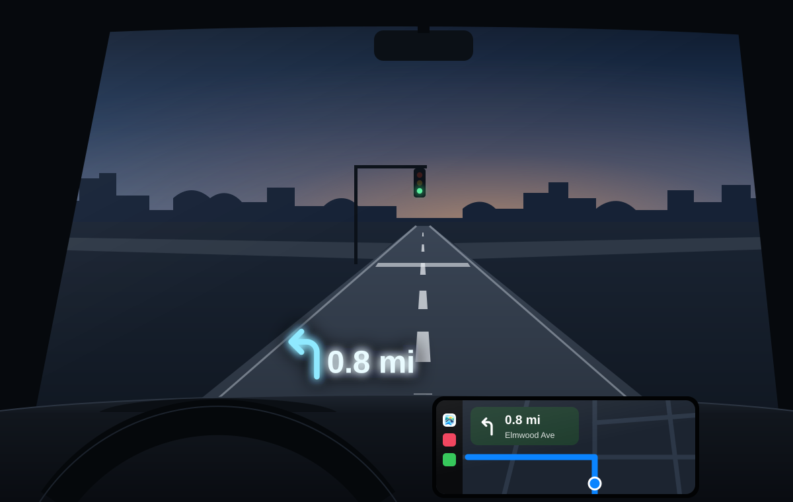
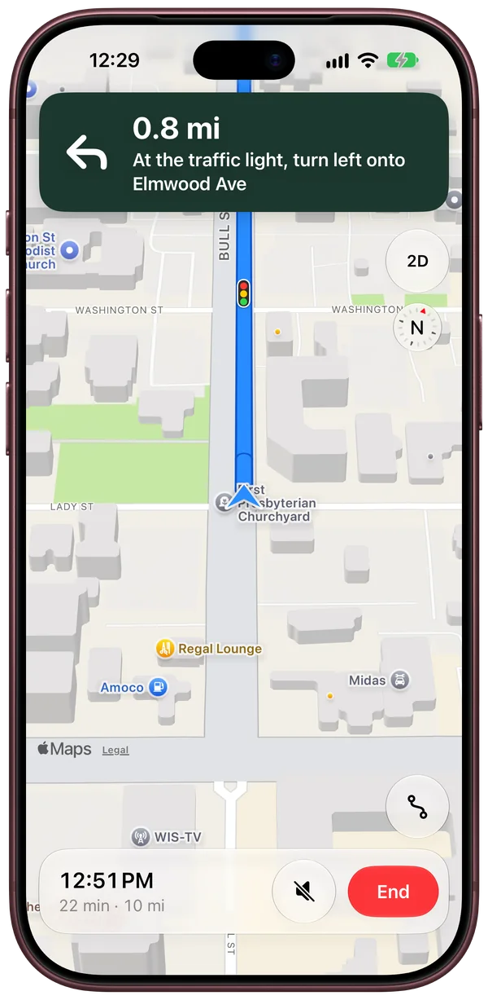
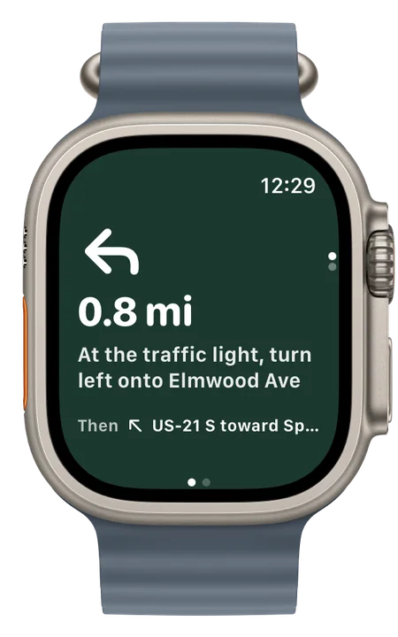
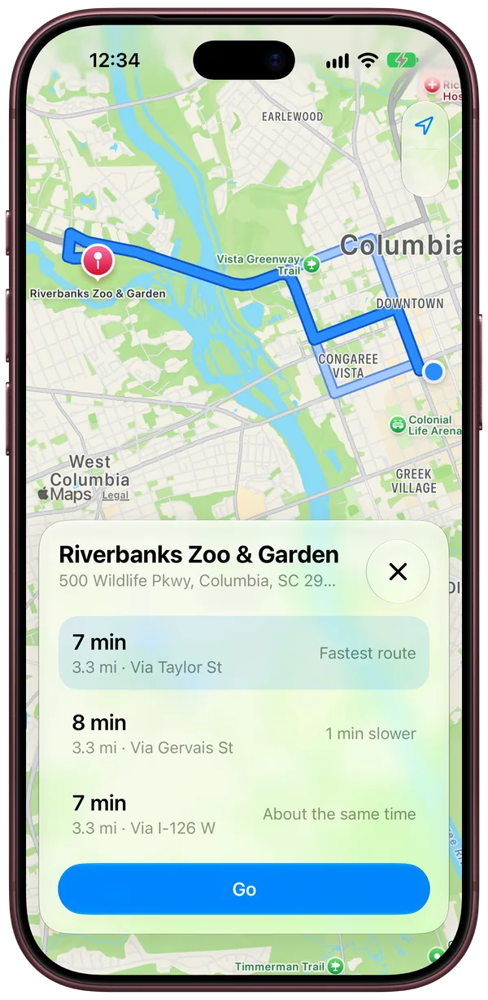
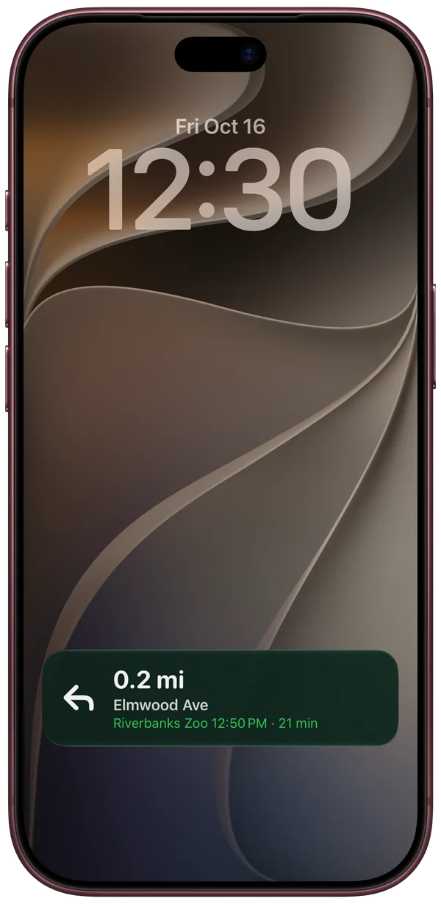

Personal project
HUD Map
Directions in plain sight.
HUD Map sends each turn from the iPhone to the car’s built-in head-up display.

Under the hood.
HUD Map is really a connector. Each turn leaves the iPhone as a one-line message, crosses the adapter’s Wi-Fi next to wireless CarPlay, and reaches the car as an iAP2 route guidance update, the kind an iPhone sends over a cable. Nothing in the car is modified.

-
HUD Map
iPhone
MapKit plans the routes. HUD Map’s guidance system tracks where you are on the route, picks the next turn and reroutes if you miss one. The guidance system sends the turn and its distance in meters to the adapter over TCP.
-
A relay added to its software
CarPlay adapter
It still runs wireless CarPlay, standing in for a plugged-in iPhone. The relay starts when the adapter powers on, listens for HUD Map on its Wi-Fi and turns HUD Map’s lines into route guidance updates for the car.
-
Its own head-up display
The car
The car converts the meters to miles and draws the turn on the windshield.
- TCP
- over the adapter’s Wi-Fi, next to wireless CarPlay
- Up to 2
- updates a second near a turn, and a heartbeat every 2 seconds
- 1,494
- lines from real drives replayed against the relay on the bench
Heads up.
HUD Map does its own turn-by-turn navigation on iPhone, CarPlay and Apple Watch.
Directions say when a turn comes at a light or a stop sign.
The next turn on your wrist, with a tap before each turn.
See how routes compare.
The next turn and the arrival time on the Lock Screen and in the Dynamic Island.




Also in HUD Map
Turns on the glass
The next turn shows on the head-up display.
0.8mi
Follows the drive
Knows where you are on the route and how far away the next turn is.
Reroutes
Spots a wrong turn and picks a new route that heads the way you’re going.
Keeps up with traffic
The time left follows the traffic, and HUD Map offers a faster route when one opens up.
Find Nearby
Gas, food, coffee, parking and EV chargers close by.
Skip the typing
Search finds your contacts’ addresses, upcoming events with a place show up before they start, and an address you copy is ready to open.
CarPlay
The full app runs on the car’s screen and on the CarPlay Dashboard, with Home and Work one tap away.
A screen for the passenger
A second screen on the iPhone for adding a stop or switching routes while CarPlay keeps guiding.
The arrival
When you’ll get there and how far is left. Double tap to end.
3D map
Buildings and hills in 3D, and an arrow that glides along the road between updates.
A personal project.
Why it was built
CarPlay handles almost everything in the car, but the head-up display only shows directions from the car’s own navigation. That system’s 3G connection is no longer supported, and getting an address from a phone into it is tedious.
Apple Maps doesn’t send its turns to the head-up display, and it doesn’t share them with other apps. So HUD Map is a connector that gets each turn from the iPhone, through the adapter, to the car. That meant building the navigation too.
Why it won’t be released
Releasing it would mean modifying a CarPlay adapter for every car it runs in.
Personal project
HUD Map
- Status
- Personal project
- Works with
- iPhone with iOS 27
- CarPlay
- Approved by Apple
- Apple Watch
- Yes
- Developer
- NUTTR